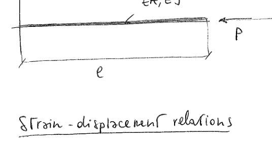
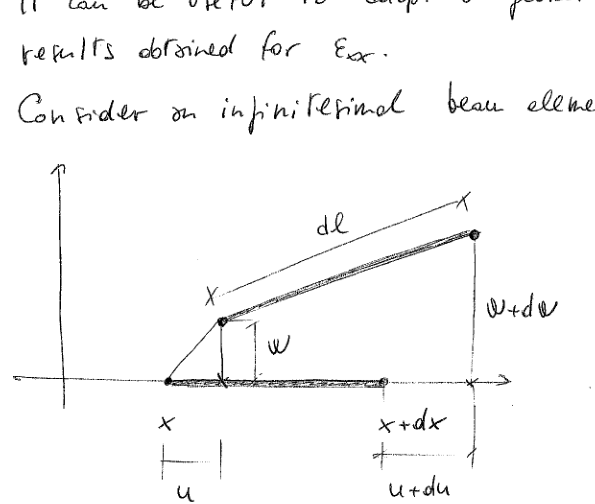
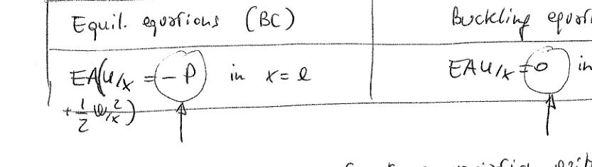
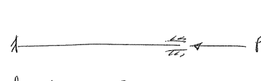

Instability Criteria and Buckling of Axially Loaded Beams
Energy Methods in Structural Stability Analysis
Part I: Instability Criteria
In the context of an energy-based approach, the stability of the elastic equilibrium can be studied referring to two different criteria:
Neutral equilibrium method
Adjacent equilibrium method (Trefftz criterion)
In many practical cases the two methods lead to identical equations (this is why they are sometimes confused); however, they are different criteria associated with different ideas.
Neutral Equilibrium Method
The total potential energy is
\[\Pi = U + V\]
Consider the case of a N-dof problem, whose coordinates are given by \(\underline{q}\).
The variation from \(\underline{q}\) to \(\underline{q} + \delta\underline{q}\) determines a variation of the total potential energy in the form:
Consider now another equilibrium condition, i.e. another configuration satisfying the equilibrium requirements, close to the reference condition R. Note: close but distinct.
Denote this configuration with A = adjacent (= close to the reference configuration).
The total potential energy of the adjacent configuration is then:
\[\Pi_A = \Pi_R + \Delta\Pi_R\]
(If you prefer, this equation defines what the adjacent equilibrium configuration is: a configuration of equilibrium whose total potential energy is equal to \(\Pi_R\) plus a small variation)
The adjacent configuration is an equilibrium configuration, so:
In many cases, the two criteria lead to the same equations. However the criteria are well different from each other from a conceptual point of view:
Neutral equilibrium method: check the stability of the equilibrium
Adjacent equilibrium method: for a given equilibrium configuration check if another, distinct configuration exists in the neighborhood of the reference one.
Often the expression of \(\Pi_R\) is quadratic, thus
\[\Delta\Pi_R = \frac{1}{2}\delta^2\Pi_R\]
Assuming an initial condition with \(\Pi_R = 0\), it follows that
It follows that the instability condition is sometimes denoted by \(\delta\Pi_R = 0\). However, it is of paramount importance to understand that this is an "undercover" application of the Trefftz criterion.
Part II: Buckling of an Axially Loaded Beam

Figure 2: Axially loaded beam with properties EA and EJ
Strain-Displacement Relations
Recall the nonlinear expression of the Green-Lagrange strain tensor:
The displacement components associated with the beam reported in the sketch are \(u\) and \(w\) (\(u_x\) and \(u_z\)). The strain component \(\mathcal{E}_{xx}\) is then:
\[\mathcal{E}_o = u_{/x} + \frac{1}{2}w_{/x}^2 \qquad k = -w_{/xx}\]
Note: Hereinafter the subscript "o" will be omitted. It will be implicit in the notation that \(u\) and \(w\) are displacements referred to the reference line.
Geometrical Interpretation
It can be useful to adopt a geometrical interpretation for the results obtained for \(\mathcal{E}_{xx}\).
Consider an infinitesimal beam element:

Figure 3: Infinitesimal beam element before and after deformation
After the deformation process, the length of the infinitesimal beam element is:
Note: The final expression includes the term \(\frac{1}{2}u_{/x}^2\) which was neglected earlier due to the assumption of infinitesimal in-plane displacements.
Energy Approach
In contrast to what seen for the case of 1-dof and 2-dof problems, we consider now a beam, which is a continuum. It follows that we now deal with functionals instead of Hessian matrices (at least until the problem is not discretized).
Goal: identify the ODE and the relevant BCs describing the buckling behaviour of the beam.
Introduce now a perturbation to the reference configuration:
\[u \longrightarrow u + \delta u\]
\[w \longrightarrow w + \delta w\]
Note: We are dealing with a displacement-based approach, so the perturbations are introduced at the displacement components. Despite \(\Pi\) is written (for brevity) in terms of \(N\), \(M\), \(\mathcal{E}_o\) and \(k\), recall that the unknowns are \(u\) and \(w\).
Perturbation of Strain and Stress Quantities
A perturbation of \(u\) and \(w\) determines a perturbation of \(N\), \(M\), \(\mathcal{E}_o\) and \(k\). More specifically:
Key insight: From \(\delta\Pi\) we obtain the equilibrium equations. From \(\delta^2\Pi\) we can assess the stability by means of the Trefftz criterion (we obtain the buckling equations).
So, the first equation is: \(N_{/x} = \left[EA\left(u_{/x} + \frac{1}{2}w_{/x}^2\right)\right]_{/x} = 0\) (nonlinear term)
Similarly the second equation contains nonlinear terms due to the term \(Nw_{/xx}\).
To identify the equilibrium condition (pre-buckling configuration) the solution of the two equilibrium equations is needed. Again, notice that the two equations are nonlinear and coupled (\(u\) and \(w\) appear in both equations).
However, for the case of axially loaded beam, the solution of the equilibrium conditions can be found as follows:
\[N_{/x} = 0 \quad \text{so} \quad N = \text{const} \quad \text{but} \quad N + P = 0 \text{ in } x = l\]
\[N = -P\]
This means that the axial force is equal to applied load \(P\) (the minus sign is due to the fact that the load is compressive).
For solving the buckling equations (see later) the knowledge of \(N\) is enough. Once we are in the position of obtaining the value of \(N\), we can try to solve the buckling equations.
For the simple case here considered \(N = -P\), thus \(N\) is constant. To a more general extent, it should be clear that \(N\) is the axial force associated with the solution of the pre-buckling equilibrium equations.
Stability - Buckling Equations
The buckling equations are now derived using the Trefftz criterion:
where \(\bar{N}\), \(\bar{w}\) are the axial force and out-of-plane displacement as obtained from the solution of the equilibrium (pre-buckling equations).
Derivation of Buckling Equations
We must now impose the variation of \(\left.\delta^2\Pi\right|_{@equil.}\):
The buckling equations depend on the solution of the pre-buckling equilibrium equations (they depend on \(\bar{w}\) and \(\bar{N}\)).
To solve the buckling problem it is necessary to solve the equilibrium problem first!
For an axially loaded beam, the pre-buckling equations can be solved easily in terms of axial force: \(\bar{N} = -P\)
However the evolution of \(\bar{w}\) requires the solution of the pre-buckling equations in terms of displacements.
If \(\bar{w} = 0\) the only result from the pre-buckling analysis is \(\bar{N} = -P\). Nothing else is needed to solve the buckling problem.
It is fundamental to recall that \(u\) and \(w\) are variations with respect to the equilibrium condition.
The buckled configuration is then the superposition of the equilibrium configuration and its variation as determined from the buckling equations.
As a follow up to the previous remark, it is worth noting that the boundary conditions are always homogeneous.
Consider the BC associated with the axial force:

Figure 4: Comparison of equilibrium and buckling boundary conditions
The buckling equations refer to a variation with respect to a configuration that already satisfies the equilibrium requirements (both in terms of equations and BCs). It is then clear that the non-homogeneous conditions are already satisfied by the pre-buckling configuration.
There is a substantial difference between the equilibrium and the buckling equations:
Equilibrium equations: they are a classical boundary value problem. For a given load it is possible to find the deformed shape.
Buckling equations: they are an eigenvalue problem. The solution \(u = w = 0\) is a solution of the equations (trivial). The idea is to identify the value of \(P\) such that a solution, different from the trivial one, exists.
The bending part of the buckling equations is uncoupled from the axial one. It is then possible to solve the buckling problem by considering the bending buckling equation only.
The buckling equations are not equilibrium equations! They provide information regarding the stability of the equilibrium, not regarding the equilibrium itself.
Solution of the Buckling Equations
Due to the uncoupling between in-plane and out-of-plane behaviour, the second equation can be solved independently from the first one:
General solution: \(w = Ax + B + C\sin\beta x + D\cos\beta x\) with \(\beta = \sqrt{\frac{P}{EJ}}\)
Boundary conditions:
\[\begin{cases} w(0) = 0 \\ w_{/xx}(0) = 0 \\ w(l) = 0 \\ w_{/xx}(l) = 0 \end{cases} \Rightarrow \begin{cases} B + D = 0 \\ D = 0 \\ Al + B + C\sin\beta l + D\cos\beta l = 0 \\ -\beta^2 C\sin\beta l - \beta^2 D\cos\beta l = 0 \end{cases}\]
From the first two equations: \(B = 0\), \(D = 0\)
The system reduces to:
\[\begin{cases} Al + C\sin\beta l = 0 \\ -\beta^2 C\sin\beta l = 0 \end{cases}\]
If \(C = 0 \Rightarrow A = 0 \Rightarrow\) Trivial solution
For non-trivial solution: \(\sin\beta l = 0\) if \(\beta l = n\pi\)
So:
\[\sqrt{\frac{P}{EJ}}\,l = n\pi \Rightarrow P = \frac{\pi^2 n^2}{l^2}EJ\]
\[P_{cr} = \frac{\pi^2 EJ}{l^2} \quad (n = 1)\]
By comparison with \(P = \frac{\pi^2 EJ}{\lambda^2}\):
\[l = \lambda\]
Buckling Mode
With \(B = 0\), \(D = 0\), \(A = 0\), and \(\sin\beta l = 0\):
\[w = C\sin\beta x\]
But \(\beta l = n\pi\) (for \(n = 1\), \(\beta l = \pi\))
\[w = C\sin\frac{\pi}{l}x\]
Figure 6: Buckling mode for hinged-hinged beam
Case 2: Clamped-Clamped Beam

Figure 7: Clamped-clamped beam configuration
Boundary conditions:
\[\begin{cases} w(0) = 0 \\ w_{/x}(0) = 0 \\ w(l) = 0 \\ w_{/x}(l) = 0 \end{cases} \Rightarrow \begin{cases} B + D = 0 & (1) \\ A + \beta C = 0 & (2) \\ Al + B + C\sin\beta l + D\cos\beta l = 0 & (3) \\ A + \beta C\cos\beta l - \beta D\sin\beta l = 0 & (4) \end{cases}\]
From (1) and (2): \(B = -D\), \(A = -\beta C\)
Substituting into (3) and (4):
\[\begin{cases} C\left(\sin\beta l - \beta l\right) + D\left(\cos\beta l - 1\right) = 0 \\ C\left(\cos\beta l - 1\right) - D\sin\beta l = 0 \end{cases}\]
As usual \(C = D = 0\) satisfies the equations, implying \(A = B = 0 \Rightarrow\) Trivial solution
The non-trivial solution is found by setting to zero the determinant of the matrix of coefficients (note: this is a nonlinear eigenvalue problem):
\[-\left(\sin\beta l - \beta l\right) \cdot \sin\beta l - \left(\cos\beta l - 1\right)^2 = 0\]
\[-\sin^2\beta l + \beta l\sin\beta l - \cos^2\beta l - 1 + 2\cos\beta l = 0\]
\[-2 + \beta l\sin\beta l + 2\cos\beta l = 0\]
\[\frac{\beta l}{2}\sin\beta l + \cos\beta l = 1\]
The equation is satisfied if \(\beta l = 2n\pi\) (since \(\sin 2n\pi = 0\) and \(\cos 2n\pi = 1\))
So:
\[\sqrt{\frac{P}{EJ}}\,l = 2n\pi \Rightarrow P = \frac{n^2 4\pi^2 EJ}{l^2}\]